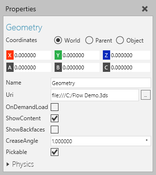
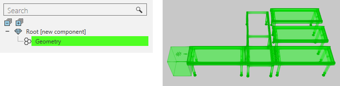

A Geometry feature is a container of geometry that is either imported or generated in the feature or collapsed from other features.

Geometry features can be used to load interchangeable geometry and is the default container for imported geometry.

| Name | Description |
| Name | Defines the name of the feature. |
| Visible | Turns on/off the visibility of feature and its subfeatures. |
| Uri | Defines the file path of a CAD file loaded by the feature. Changing the file path deletes all preexisting geometry in the feature. |
| OnDemandLoad | Turns on/off the allocation of memory for contained geometry based on the need of the feature. Generally, OnDemand is used when there are large amounts of geometry and a Switch feature is controlling the use of the feature. |
| ShowBackfaces | Turns on/off the rendering of backfaces in the feature. |
| CreaseAngle | Defines an angle tolerance for treating adjacent faces as one smooth surface during light calculations in which face normals are averaged to produce reflection normals. |
| Pickable | Defines if geometry of feature can be picked in the 3D world. This affects any tool, command or shortcut that uses snap types. |
| Physics | Defines a set of physics properties for the feature. |